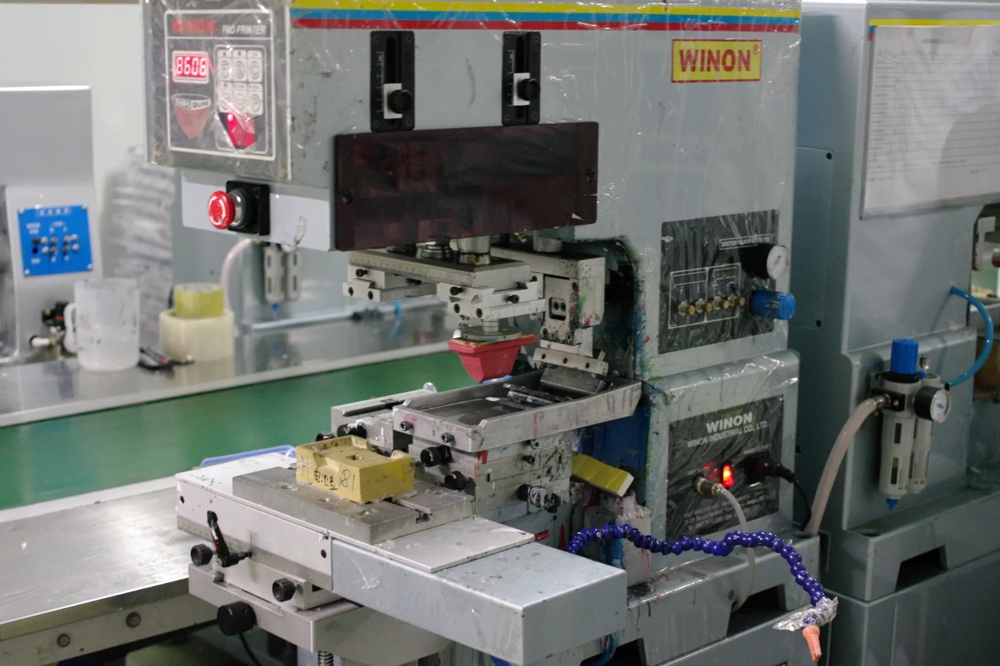

- Cliché com tinta
- Recolha pelo tampão
- Transferência para a peça
Para que serve e como funciona
Uma chapa gravada, chamada cliché, recebe tinta. Um tampão de silicone recolhe a imagem e transfere-a para o objeto, que precisa de ficar numa posição repetível. O conjunto inclui a chapa, o tampão e um suporte adaptado à peça. ↗
Artigos e aplicações
É uma possibilidade a avaliar em pequenos objetos, como canetas. A flexibilidade do tampão ajuda a alcançar certas formas curvas; a geometria, o revestimento e a tinta continuam a condicionar o resultado.
Limitações e decisões
O tamanho da marca depende do conjunto chapa/tampão e da superfície acessível. Desenhos com várias cores exigem alinhamento entre aplicações. Confirme a legibilidade de letras pequenas e a aderência no artigo concreto.
O que confirmar no trabalho
Peça a avaliação da referência, da arte e do acabamento pretendido. Confirme a área acessível, a preparação necessária e a forma de validar o resultado. A descrição deste equipamento não significa que a Nobrinde o possua, opere ou disponibilize este serviço.
Fontes e âmbito
As referências de fabricantes e fornecedores descrevem os seus próprios processos ou equipamentos. Não são especificações da operação da Nobrinde.